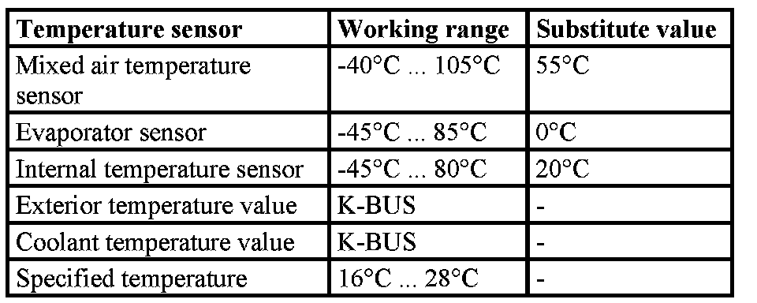
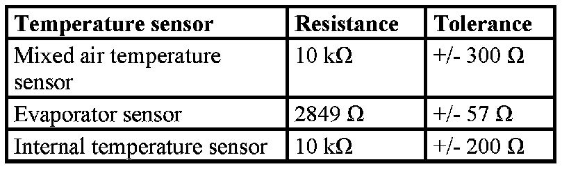

Specified and Substitute Values For the Temperature Sensors IHKA (IHKA Integrated Heating/A/C Control E85)
Specified and substitute values for the temperature sensors IHKA
Data on working range and substitute value in event of cutout or K bus fault.

Data on resistance values at 25�C and fault limits:
